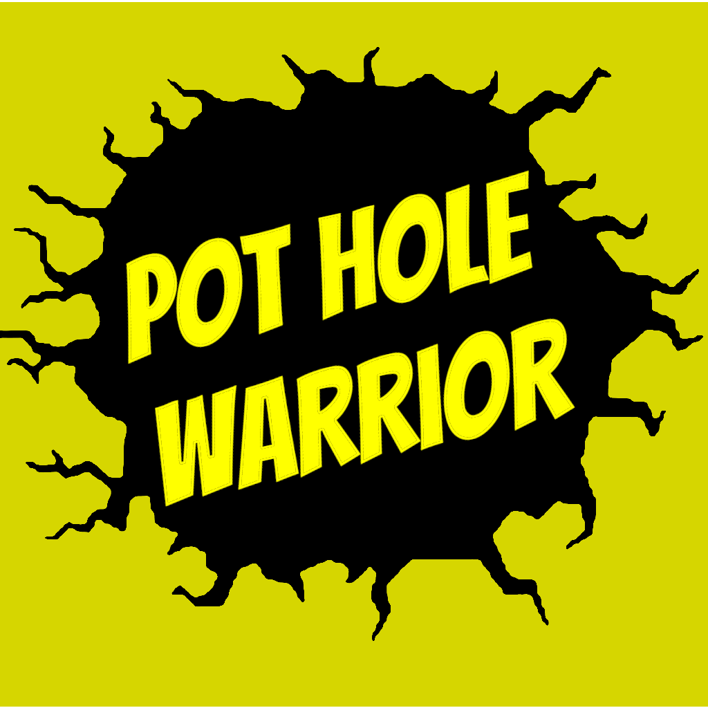

<!doctype html>
<html lang="en">
<head>
  <meta charset="utf-8" />
  <meta name="viewport" content="width=device-width,initial-scale=1" />
  <title>PotholeWarrior – Web Map</title>

  <!-- Leaflet -->
  <link
    rel="stylesheet"
    href="https://unpkg.com/leaflet@1.9.4/dist/leaflet.css"
    integrity="sha256-p4NxAoJBhIIN+hmNHrzRCf9tD/miZyoHS5obTRR9BMY="
    crossorigin=""
  />
  <script
    src="https://unpkg.com/leaflet@1.9.4/dist/leaflet.js"
    integrity="sha256-20nQCchB9co0qIjJZRGuk2/Z9VM+kNiyxNV1lvTlZBo="
    crossorigin=""
  ></script>

  <!-- MarkerCluster (for fast mobile-safe clustering) -->
  <link
    rel="stylesheet"
    href="https://unpkg.com/leaflet.markercluster@1.5.3/dist/MarkerCluster.css"
  />
  <link
    rel="stylesheet"
    href="https://unpkg.com/leaflet.markercluster@1.5.3/dist/MarkerCluster.Default.css"
  />
  <script
    src="https://unpkg.com/leaflet.markercluster@1.5.3/dist/leaflet.markercluster.js"
  ></script>

  <style>
    html, body { height: 100%; margin: 0; }
    #map { height: 100%; width: 100%; }

    /* Simple “Folium-like” overlays */
    .map-overlay {
      background: rgba(255,255,255,0.92);
      border-radius: 10px;
      padding: 10px 12px;
      box-shadow: 0 8px 20px rgba(0,0,0,0.15);
      font: 14px/1.2 system-ui, -apple-system, Segoe UI, Roboto, Arial, sans-serif;
    }
    .legend-row { display:flex; align-items:center; gap:8px; margin:6px 0; }
    .swatch { width:14px; height:14px; border-radius:50%; border:1px solid rgba(0,0,0,0.25); }
    .logo-badge {
      display:flex; align-items:center; gap:10px;
    }
    .logo-badge img {
      width: 34px; height: 34px; border-radius: 8px;
      object-fit: cover; border: 1px solid rgba(0,0,0,0.15);
      background: #fff;
    }
    .logo-badge .title { font-weight: 700; }
    .logo-badge .sub { font-size: 12px; opacity: 0.8; margin-top: 2px; }
  </style>
</head>
<body>
<div id="map"></div>

<script>
  // ----------------------------
  // Helpers
  // ----------------------------
  // ----------------------------
// Probable pothole helpers (F9 parity)
// ----------------------------
const BURST_CLUSTER_RADIUS_M = 15.0;
const BURST_RECENT_DAYS = 7.0;
const CONF_HALF_LIFE_DAYS = 14.0;
const LOW_SPEED_MPS = 3.0;
const LOW_SPEED_PENALTY = 0.7;

function haversineMeters(lat1, lon1, lat2, lon2) {
  const R = 6371000;
  const toRad = x => x * Math.PI / 180;
  const dLat = toRad(lat2 - lat1);
  const dLon = toRad(lon2 - lon1);
  const a =
    Math.sin(dLat/2) * Math.sin(dLat/2) +
    Math.cos(toRad(lat1)) * Math.cos(toRad(lat2)) *
    Math.sin(dLon/2) * Math.sin(dLon/2);
  return 2 * R * Math.asin(Math.sqrt(a));
}

function burstColor(score) {
  const s = Number(score) || 0;
  if (s >= 66) return "#e31116";
  if (s >= 33) return "#fe911d";
  return "#d7d807";
}

function sat(x, k) {
  x = Number(x) || 0;
  return 1 - Math.exp(-Math.max(0, x) / Math.max(1e-6, k));
}
  function pickFirst(obj, keys, fallback=null) {
    for (const k of keys) {
      if (obj && Object.prototype.hasOwnProperty.call(obj, k) && obj[k] !== null && obj[k] !== undefined) {
        return obj[k];
      }
    }
    return fallback;
  }

  // Color ramps (edit these once we confirm your exact property names + thresholds)
function lerp(a, b, t) { return a + (b - a) * t; }
function hexToRgb(hex) {
  const h = hex.replace("#", "").trim();
  return {
    r: parseInt(h.slice(0,2), 16),
    g: parseInt(h.slice(2,4), 16),
    b: parseInt(h.slice(4,6), 16),
  };
}
function rgbToHex(r,g,b) {
  const toHex = (x) => Math.max(0, Math.min(255, Math.round(x))).toString(16).padStart(2,"0");
  return "#" + toHex(r) + toHex(g) + toHex(b);
}

// F9-style segment gradient: red -> orange -> yellow -> green
// We clamp to 75..100 like your notebook does for visual range.
function colorForSQI(sqi) {
  let x = Number(sqi);
  if (!isFinite(x)) return "#999999";
  x = Math.max(75, Math.min(100, x));

  const stops = [
    { v: 75,  c: "#d73027" }, // red
    { v: 83.3, c: "#fc8d59" }, // orange
    { v: 91.6, c: "#fee08b" }, // yellow
    { v: 100, c: "#91cf60" }   // green
  ];

  for (let i = 0; i < stops.length - 1; i++) {
    const a = stops[i], b = stops[i+1];
    if (x >= a.v && x <= b.v) {
      const t = (x - a.v) / (b.v - a.v);
      const A = hexToRgb(a.c), B = hexToRgb(b.c);
      return rgbToHex(lerp(A.r,B.r,t), lerp(A.g,B.g,t), lerp(A.b,B.b,t));
    }
  }
  return stops[stops.length - 1].c;
}

  function colorForEvent(props) {
    // Try to match your F9 contract:
    // - Tagged pothole -> RED
    // - Speed bump -> GREY
    // - Candidate pothole -> ORANGE (severity-scaled in size)
    const tagLabel = (pickFirst(props, ["tag_label", "tag", "label"], "") || "").toString().toLowerCase();
    const eventType = (pickFirst(props, ["event_type", "type"], "") || "").toString().toLowerCase();

    if (tagLabel.includes("pothole")) return "#ff0000";
    if (eventType === "speed_bump" || tagLabel.includes("speed")) return "#808080";
    if (eventType === "candidate_hit") return "#ff7a00";
    return "#1f78ff"; // fallback (blue)
  }

  function radiusForEvent(props) {
    // Use severity if present; otherwise a sensible default
    const sev = Number(pickFirst(props, ["severity", "sev", "score", "mag", "delta"], 1));
    if (isNaN(sev)) return 6;
    // Clamp + scale lightly (mobile-friendly)
    return Math.max(5, Math.min(14, 5 + sev * 2));
  }

  function colorForBurst(props) {
    // Bursts often represent “impacts” -> keep punchy
    // If you have "delta" or "mag", we can refine later.
    return "#ffffff"; // white marker like your current map; we can switch to red later if desired
  }

  function radiusForBurst(props) {
    const d = Number(pickFirst(props, ["delta", "mag", "impact", "severity"], 1));
    if (isNaN(d)) return 5;
    return Math.max(4, Math.min(12, 4 + d * 2));
  }

  function popupHtml(title, props) {
    const rows = Object.entries(props || {})
      .filter(([k,v]) => v !== null && v !== undefined && v !== "")
      .slice(0, 25) // keep popups light
      .map(([k,v]) => `<div><b>${k}</b>: ${String(v)}</div>`)
      .join("");
    return `<div style="min-width:220px"><div style="font-weight:700;margin-bottom:6px">${title}</div>${rows}</div>`;
  }

  // ----------------------------
  // Map init
  // ----------------------------
  const map = L.map("map", { preferCanvas: true }).setView([51.0, -0.1], 13);
  
  // Try to centre map on user location
map.locate({ setView: true, maxZoom: 16 });

map.on("locationfound", function(e) {
  const radius = e.accuracy / 2;

  L.circleMarker(e.latlng, {
    radius: 6,
    color: "#0077ff",
    fillColor: "#0077ff",
    fillOpacity: 0.9
  }).addTo(map)
    .bindPopup("You are here")
    .openPopup();

  L.circle(e.latlng, radius, {
    color: "#0077ff",
    weight: 1,
    fillOpacity: 0.1
  }).addTo(map);
});

map.on("locationerror", function() {
  console.log("User location unavailable — using default view.");
});

  const osm = L.tileLayer("https://{s}.tile.openstreetmap.org/{z}/{x}/{y}.png", {
    maxZoom: 19,
    attribution: "&copy; OpenStreetMap contributors"
  }).addTo(map);

  const tonerLite = L.tileLayer("https://stamen-tiles.a.ssl.fastly.net/toner-lite/{z}/{x}/{y}.png", {
    maxZoom: 20,
    attribution: "Map tiles by Stamen Design"
  });

  const baseLayers = {
    "OpenStreetMap": osm,
    "Toner Lite": tonerLite
  };

  // Overlay containers
  const segmentsLayer = L.layerGroup();
  const probableLayer = L.layerGroup();
  const repeatDefectsLayer = L.layerGroup();
  const candidateDefectsLayer = L.layerGroup();
  const pilotDefectsLayer = L.layerGroup();
  const confirmedDefectsLayer = L.layerGroup();

  const eventsCluster = L.markerClusterGroup({
    chunkedLoading: true,
    chunkDelay: 25,
    maxClusterRadius: 55,
    spiderfyOnMaxZoom: true
  });
  const burstsCluster = L.markerClusterGroup({
    chunkedLoading: true,
    chunkDelay: 25,
    maxClusterRadius: 55,
    spiderfyOnMaxZoom: true
  });

  const overlayMaps = {
    "Segments": segmentsLayer,
    "Bursts": burstsCluster,
    "Probable potholes": probableLayer,
    "Repeat defects": repeatDefectsLayer,  
    "Candidate defects (3+ drives)": candidateDefectsLayer,
    "Pilot defects (4+ drives)": pilotDefectsLayer,
    "Confirmed defects (6+ drives)": confirmedDefectsLayer
  };

  L.control.layers(baseLayers, overlayMaps, { collapsed: true }).addTo(map);

  // ----------------------------
  // Load GeoJSON (relative files)
  // ----------------------------
  async function loadGeoJson(url) {
    const res = await fetch(url, { cache: "no-store" });
    if (!res.ok) throw new Error(`Failed to load ${url}: ${res.status}`);
    return await res.json();
  }

  function addSegments(geo) {
    const gj = L.geoJSON(geo, {
      pointToLayer: (feature, latlng) => {
        const p = feature.properties || {};
        let sqi = Number(p.SQI_pred_v2_locburst);
        if (!isFinite(sqi)) return L.circleMarker(latlng, { radius: 0, opacity: 0 });
        sqi = Math.max(75, Math.min(100, sqi));
        const col = colorForSQI(sqi);
        return L.circleMarker(latlng, {
          radius: 5,
          weight: 0,
          color: col,
          fillColor: col,
          fillOpacity: 0.85
        }).bindPopup(popupHtml("Segment", p));
      },
        style: (feature) => {
          const p = (feature && feature.properties) || {};
          let sqi = Number(p.SQI_pred_v2_locburst);
          if (!isFinite(sqi)) sqi = 100; // fail-open
          sqi = Math.max(75, Math.min(100, sqi));
          const col = colorForSQI(sqi);
          return { color: col, weight: 4, opacity: 0.8 };
        }
    });
    gj.addTo(segmentsLayer);
  }

  function addEvents(geo) {
    const gj = L.geoJSON(geo, {
      pointToLayer: (feature, latlng) => {
        const p = feature.properties || {};
        const col = colorForEvent(p);
        const r = radiusForEvent(p);
        const marker = L.circleMarker(latlng, {
          radius: r,
          weight: 1,
          color: col,
          fillColor: col,
          fillOpacity: 0.85
        }).bindPopup(popupHtml("Event", p));
        return marker;
      }
    });
    eventsCluster.addLayer(gj);
  }

  function addBursts(geo) {
    const gj = L.geoJSON(geo, {
      pointToLayer: (feature, latlng) => {
        const p = feature.properties || {};
        const col = colorForBurst(p);
        const r = radiusForBurst(p);
        const marker = L.circleMarker(latlng, {
          radius: r,
          weight: 1,
          color: "#000000",
          fillColor: col,
          fillOpacity: 0.95
        }).bindPopup(popupHtml("Burst", p));
        return marker;
      }
    });
    burstsCluster.addLayer(gj);
  }
  
  function addRepeatDefects(geo) {
  const gj = L.geoJSON(geo, {
    pointToLayer: (feature, latlng) => {
      const p = feature.properties || {};

      const drives = Number(p.drive_count) || 1;

      return L.circleMarker(latlng, {
        radius: 4 + drives,
        weight: 1,
        color: "#cc0000",
        fillColor: "#ff3333",
        fillOpacity: 0.9
      }).bindPopup(
        popupHtml("Repeat defect", p)
      );
    }
  });

  gj.addTo(repeatDefectsLayer);
}


    function addClusteredDefects(geo, targetLayer, label, strokeColor, fillColor) {
      const gj = L.geoJSON(geo, {
        pointToLayer: (feature, latlng) => {
          const p = feature.properties || {};
          const drives = Number(p.max_drive_count) || 1;
    
          const strength = Math.max(0.25, Math.min(1.0, drives / 15));
    
          return L.circleMarker(latlng, {
            radius: 5 + (p.severity_score || 0) / 20,
            weight: 1,
            color: p.severity_colour || strokeColor,
            fillColor: p.severity_colour || fillColor,
            fillOpacity: strength,
            opacity: 0.9
          }).bindPopup(
            popupHtml(label, p)
          );
        }
      });
    
      gj.addTo(targetLayer);
    }
  
  function addProbablePotholes(geo) {
  const bursts = (geo.features || []).map(f => {
    const p = f.properties || {};
    const coords = f.geometry.coordinates; // [lon, lat]
    return {
      lat: coords[1],
      lon: coords[0],
      score: Number(p.burst_score_v1) || 0,
      ts: p.obs_ts_utc ? new Date(p.obs_ts_utc) : null,
      drive: p.source_drive || "",
      speed: Number(p.speed_mps),
      trigger: Number(p.trigger_value) || Number(p.peak_accel_mag) || 0
    };
  });

  // F9: drop low-speed + high-accel (95th percentile accel proxy)
  const accelVals = bursts.map(b => b.trigger).filter(x => isFinite(x)).sort((a,b)=>a-b);
  const hiThr = accelVals.length ? accelVals[Math.floor(0.95 * (accelVals.length - 1))] : NaN;

  const filtered = bursts.filter(b => {
    const lowSpeed = !isFinite(b.speed) || b.speed < LOW_SPEED_MPS;
    if (!isFinite(hiThr)) return true;
    return !(lowSpeed && isFinite(b.trigger) && b.trigger >= hiThr);
  });

  // tmax for windows/decay
  let tmax = null;
  for (const b of filtered) {
    if (b.ts && (!tmax || b.ts > tmax)) tmax = b.ts;
  }
  if (!tmax) tmax = new Date(); // fail-open
  const recentCutoff = new Date(tmax.getTime() - BURST_RECENT_DAYS * 86400000);

  // Greedy clustering within 15m around running centroid
  const clusters = [];

  for (const b of filtered) {
    let assigned = false;

    for (const c of clusters) {
      const d = haversineMeters(b.lat, b.lon, c.lat, c.lon);
      if (d <= BURST_CLUSTER_RADIUS_M) {
        c.n += 1;
        c.lat = (c.lat * (c.n - 1) + b.lat) / c.n;
        c.lon = (c.lon * (c.n - 1) + b.lon) / c.n;

        c.scores.push(b.score);

        if (b.ts) {
          c.times.push(b.ts);
          c.days.add(b.ts.toDateString());
          if (b.ts >= recentCutoff) c.recentScores.push(b.score);
        }
        if (b.drive) c.drives.add(b.drive);

        const isLow = (!isFinite(b.speed) || b.speed < LOW_SPEED_MPS);
        if (isLow) c.lowSpeedHits += 1;

        assigned = true;
        break;
      }
    }

    if (!assigned) {
      const isLow = (!isFinite(b.speed) || b.speed < LOW_SPEED_MPS);
      clusters.push({
        lat: b.lat,
        lon: b.lon,
        n: 1,
        lowSpeedHits: isLow ? 1 : 0,
        scores: [b.score],
        recentScores: (b.ts && b.ts >= recentCutoff) ? [b.score] : [],
        times: b.ts ? [b.ts] : [],
        days: b.ts ? new Set([b.ts.toDateString()]) : new Set(),
        drives: b.drive ? new Set([b.drive]) : new Set()
      });
    }
  }

  // Render clusters as “Probable potholes”
  for (const c of clusters) {
    const nHits = c.n;
    const nDays = c.days.size;
    const meanScore = c.scores.reduce((a,b)=>a+b,0) / c.scores.length;

    const severity = c.recentScores.length ? Math.max(...c.recentScores) : Math.max(...c.scores);

    let ageDays = 999;
    if (c.times.length) {
      const last = new Date(Math.max(...c.times.map(t => t.getTime())));
      ageDays = (tmax.getTime() - last.getTime()) / 86400000;
    }

    const base =
      0.55 * sat(nHits, 6.0) +
      0.30 * sat(nDays, 2.0) +
      0.15 * Math.max(0, Math.min(1, meanScore / 100.0));

    const decay = Math.exp(-Math.log(2) * Math.max(0, ageDays) / CONF_HALF_LIFE_DAYS);

    let confidence = Math.max(0, Math.min(1, base * decay));

    const fracLow = c.lowSpeedHits / Math.max(1, nHits);
    confidence = Math.max(0, Math.min(1, confidence * (1 - LOW_SPEED_PENALTY * fracLow)));

    const radius = 4 + 10 * confidence;
    const opacity = 0.35 + 0.60 * confidence;
    const color = burstColor(severity);

    const popupHtml = `
      <b>PROBABLE POTHOLE (from bursts)</b><br>
      <b>confidence</b>: ${confidence.toFixed(2)}<br>
      <b>severity (recent max)</b>: ${severity.toFixed(1)}<br>
      <b>hits</b>: ${nHits}<br>
      <b>distinct days</b>: ${nDays}<br>
      <b>distinct drives</b>: ${c.drives.size}<br>
      <b>mean burst_score</b>: ${meanScore.toFixed(1)}<br>
      <b>age (days since last hit)</b>: ${ageDays.toFixed(1)}
    `;

    L.circleMarker([c.lat, c.lon], {
      radius,
      color,
      fillColor: color,
      fillOpacity: opacity,
      weight: confidence >= 0.55 ? 3 : 1
    }).bindPopup(popupHtml).addTo(probableLayer);
  }
}

  // Fit map to loaded data
  function fitToAll() {
    const groups = [];
    if (segmentsLayer.getLayers().length) groups.push(segmentsLayer);
    if (eventsCluster.getLayers().length) groups.push(eventsCluster);
    if (burstsCluster.getLayers().length) groups.push(burstsCluster);
    if (!groups.length) return;

    const fg = L.featureGroup(groups);
    try {
      map.fitBounds(fg.getBounds().pad(0.1));
    } catch (_) {}
  }

  // Load everything
  (async () => {
    try {
        const [seg, bur, rep, cand, pilot, conf] = await Promise.all([
          loadGeoJson("./segments.geojson"),
          loadGeoJson("./bursts.geojson"),
          loadGeoJson("./repeat_defects.geojson"),
          loadGeoJson("./repeat_defect_clusters_candidate.geojson"),
          loadGeoJson("./repeat_defect_clusters_pilot.geojson"),
          loadGeoJson("./repeat_defect_clusters_confirmed.geojson")
        ]);
		addSegments(seg);
		addBursts(bur);
		addRepeatDefects(rep);
        addClusteredDefects(cand, candidateDefectsLayer, "Candidate defect (3+ drives)", "#b38f00", "#ffd300");
        addClusteredDefects(pilot, pilotDefectsLayer, "Pilot defect (4+ drives)", "#cc5c00", "#ff7a00");
        addClusteredDefects(conf, confirmedDefectsLayer, "Confirmed defect (6+ drives)", "#990000", "#e31116");
		addProbablePotholes(bur);

      // default-visible overlays (like Folium show=True)
      segmentsLayer.addTo(map);
      burstsCluster.addTo(map);
      probableLayer.addTo(map);

      fitToAll();
    } catch (err) {
      alert(err.message || String(err));
      console.error(err);
    }
  })();

// ----------------------------
// Legend + Logo overlays
// ----------------------------

function toggleLegend() {
  const content = document.getElementById("legendContent");
  const title = document.getElementById("legendToggle");

  if (!content || !title) return;

  const isHidden = content.style.display === "none";
  content.style.display = isHidden ? "block" : "none";
  title.textContent = isHidden ? "Legend ▲" : "Legend ▼";
}

const legend = L.control({ position: "bottomleft" });

legend.onAdd = function () {
  const container = L.DomUtil.create("div");

  const startCollapsed = window.innerWidth <= 768;

  container.innerHTML = `
    <div class="map-overlay" id="legendBox">
      <div
        id="legendToggle"
        style="font-weight:700;margin-bottom:6px;cursor:pointer"
      >
        ${startCollapsed ? "Legend ▼" : "Legend ▲"}
      </div>

      <div id="legendContent" style="display:${startCollapsed ? "none" : "block"};">
        <div style="font-weight:700;margin-bottom:6px">Legend</div>

        <div style="font-weight:600;margin-top:8px">Segments (SQI)</div>
        <div class="legend-row"><span class="swatch" style="background:${colorForSQI(95)}"></span> 90–100 (good)</div>
        <div class="legend-row"><span class="swatch" style="background:${colorForSQI(80)}"></span> 75–89</div>
        <div class="legend-row"><span class="swatch" style="background:${colorForSQI(65)}"></span> 60–74</div>
        <div class="legend-row"><span class="swatch" style="background:${colorForSQI(40)}"></span> &lt; 60 (bad)</div>

        <div style="font-weight:600;margin-top:10px">Defect score</div>
        <div class="legend-row"><span class="swatch" style="background:#FFD54F"></span> Lower score</div>
        <div class="legend-row"><span class="swatch" style="background:#FB8C00"></span> Medium score</div>
        <div class="legend-row"><span class="swatch" style="background:#E53935"></span> Higher score</div>

        <div style="font-weight:600;margin-top:10px">Bursts</div>
        <div class="legend-row"><span class="swatch" style="background:#ffffff"></span> Burst sample</div>

        <div style="font-size:12px;opacity:0.75;margin-top:10px">
          Tip: tap legend title to expand or collapse.
        </div>
      </div>
    </div>
  `;

  const toggle = container.querySelector("#legendToggle");
  if (toggle) {
    toggle.addEventListener("click", toggleLegend);
  }

  L.DomEvent.disableClickPropagation(container);
  return container;
};

legend.addTo(map);


// ----------------------------
// Map Guide (layman's explanation)
// ----------------------------

function toggleGuide() {
  const content = document.getElementById("guideContent");
  const title = document.getElementById("guideToggle");

  if (!content || !title) return;

  const hidden = content.style.display === "none";

  content.style.display = hidden ? "block" : "none";
  title.textContent = hidden ? "Map Guide ▲" : "Map Guide ▼";
}

const guide = L.control({ position: "bottomright" });

guide.onAdd = function () {

  const container = L.DomUtil.create("div");

  const startCollapsed = window.innerWidth <= 768;

  container.innerHTML = `
    <div class="map-overlay">
      <div id="guideToggle"
           style="font-weight:700;margin-bottom:6px;cursor:pointer">
        ${startCollapsed ? "What am I seeing? ▼" : "What am I seeing? ▲"}
      </div>

      <div id="guideContent"
           style="display:${startCollapsed ? "none" : "block"};
                  font-size:13px;
                  line-height:1.35;
                  max-width:260px">

        <div><b>Segments</b><br>
        Road sections coloured by overall ride quality.</div>

        <div style="margin-top:6px"><b>Bursts</b><br>
        Individual jolts detected by the phone sensors.</div>

        <div style="margin-top:6px"><b>Probable potholes</b><br>
        Locations where recent burst activity suggests a likely defect.</div>

        <div style="margin-top:6px"><b>Candidate / Pilot / Confirmed</b><br>
        Defects seen across multiple separate drives (3+, 4+, 6+).</div>

        <div style="margin-top:6px"><b>Circle size & colour</b><br>
        Larger and redder circles indicate stronger detected defects.</div>

      </div>
    </div>
  `;

  const toggle = container.querySelector("#guideToggle");
  if (toggle) toggle.addEventListener("click", toggleGuide);

  L.DomEvent.disableClickPropagation(container);

  return container;
};

guide.addTo(map);

// ----------------------------
// Locate Me button
// ----------------------------

const locateControl = L.control({ position: "topright" });

locateControl.onAdd = function () {
  const div = L.DomUtil.create("div", "map-overlay");
  div.style.cursor = "pointer";
  div.style.fontWeight = "700";
  div.style.padding = "8px 10px";
  div.innerHTML = `📍 Locate Me`;

  div.addEventListener("click", function (e) {
    e.stopPropagation();
    map.locate({ setView: true, maxZoom: 16 });
  });

  L.DomEvent.disableClickPropagation(div);
  return div;
};

locateControl.addTo(map);

let userLocationMarker = null;
let userLocationCircle = null;

map.on("locationfound", function (e) {
  if (userLocationMarker) {
    map.removeLayer(userLocationMarker);
  }
  if (userLocationCircle) {
    map.removeLayer(userLocationCircle);
  }

  userLocationMarker = L.circleMarker(e.latlng, {
    radius: 6,
    color: "#0077ff",
    fillColor: "#0077ff",
    fillOpacity: 0.9,
    weight: 1
  }).addTo(map).bindPopup("You are here");

  userLocationCircle = L.circle(e.latlng, {
    radius: e.accuracy,
    color: "#0077ff",
    weight: 1,
    fillOpacity: 0.08
  }).addTo(map);
});

map.on("locationerror", function (e) {
  alert("Could not get your location. Please allow location access in your browser.");
  console.log(e.message);
});


  const logo = L.control({ position: "topleft" });
  logo.onAdd = function() {
    const div = L.DomUtil.create("div", "map-overlay");
    div.innerHTML = `
      <div class="logo-badge">
        <!-- Optional: add a file named logo.png next to index.html and it will show -->
        
      </div>
    `;
    L.DomEvent.disableClickPropagation(div);
    return div;
  };
  logo.addTo(map);
</script>
</body>
</html>